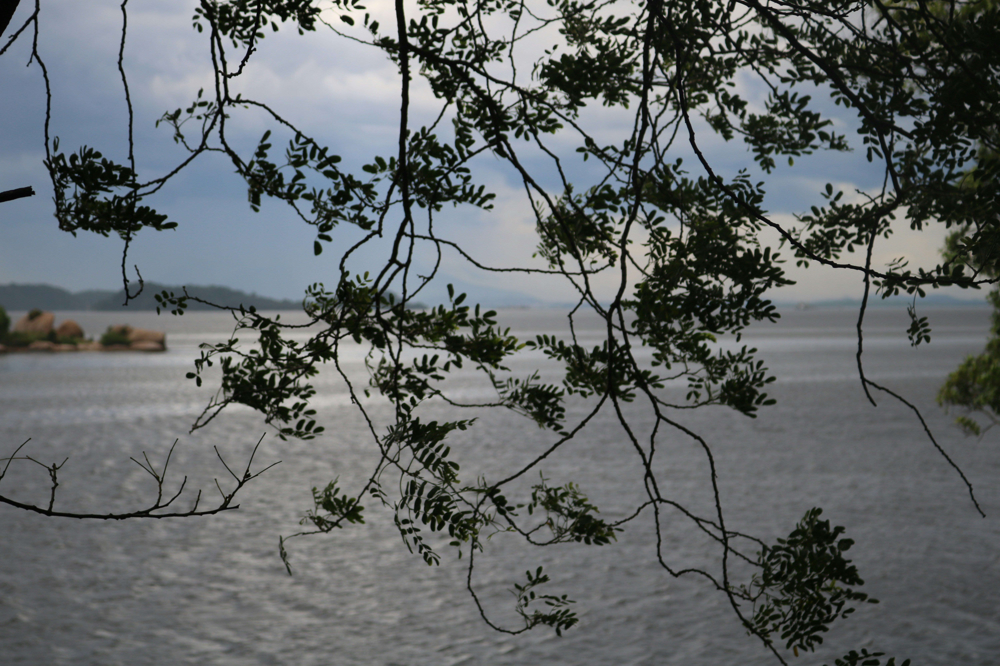

Photo by Joel Oliveira on UnsplashSomewhere in the Yucatan channel, where the Gulf of Mexico meets the Caribbean sea, lies a very happy crocodile named Lorenzo. His daily routine includes swimming upto a lagoon, seeing his human friend (lets call him Diego) and getting lots of lobster in return. He is a visibly happy and chubby crocodile; so adorable that he’s become an integral experience for the lagoon’s visitors. Diners at the restaurant where Diego cooks, pay a premium to see Lorenzo in action. If I was to describe Lorenzo in one word, it would be #winning.
Now, some people might analyze this situation and attribute Lorenzo’s success to piecemeal aspects of this ’lifestyle'.
- Its probably the quality nutrition he gets from lobsters.
- Or that gets his daily exericise from all the swimming.
- Or that he gets to see his friend, Diego, every day.
- Or that he has a deeply fulfilling job; performing for the visitors.
- Or that he is adored by his fans (the visitors).
Some might be even go ahead to compile a checklist of this, a sort of authortative list for those who seek happy, fulfilled lives. Some seekers will find this list and take it to heart, following it almost religiously. Few will actually benefit from it but many will be painfully disappointed. Seekers will find that they either can’t execute the checklist or that doing so doesn’t make any meaningful improvement to their lives; they may infact be more miserable than before. Yes, everything about the checklist is admirable, from the intentions to observations to distribution, but its missing one critical detail: Very few are destined to play the role of ‘happy crocodile’ in their lives. We are fundamentally different and so should our checklists.
With that in mind, the analyzers may go ahead to create different checklists for different archetypes, but they still wouldn’t work. See, checklists only work if you know your exact destination beforehand; most people don’t, we often figure out our objectives through a long timeline of exposure, trial and error. Seekers would have to comb through an infinite number of checklists to arrive at the perfect fit. This is theoretically possible but absolutely impractical with the constraints of the real world. Bound by finite time, energy and resources, one might conclude that seekers are doomed. Thankfully, they would also be wrong.
Plans and checklists are great but baked in them is a flawed assumption that you need them in the first place. Note that Lorenzo wasn’t working off a checklist, he was simply living an ordinary crocodile life. He just so happened to swim in the right direction on the right day, met the right human (Diego) who so happened to know a lot about seafood and was open to inter-species friendship. Neither his nor was Diego’s life lacking when they met; Infact if they never met, we’d probably never hear about them but they’d still live fulfilling lives. They became main characters not inspite of but precisely because they didn’t plan to be.
If you find it hard to relate to a crocodile, you don’t have to look far; history is filled with stories that manifest this pattern. Most of your heroes didn’t plan to be heroes. Best selling novelist John Grisham didn’t plan to be a writer, he was a lawyer who stumbled upon writing on overhearing a testimony. Nelson Mandela didn’t plan to win the Nobel Prize; no sane person plans to spend 27 years in prison, he simply stood by his convictions and his people. Knowing what you know about Toni Morrison,the decorated, multi-awarded novelist, you’d think she dedicated her whole life to her novels, not quite. Toni’s writing started off a college extracurricula, then a parttime hobby before it became her fulltime job.
Wildly different stories but remarkable nonetheless. Their common denominator appears to be that they found their (rather unconventional) place in life. They exude what can only be descried as main character energy. You probably know them personally, heck you are probably even one of them. Here’s what I’ve observed about them.
- They are multi-dimensional.
You know that because they bring their whole self to the table. They do not curate themselves into one-dimensional caricatures. Instead, they share their wins, losses, plans, side quests, dreams and aspirations. This has a side effect of making space for themselves and others.
- They prefer guidelines to rules.
Just because they don’t subscribe to checklists doesn’t mean that they are rebels. They do infact follow directions, but they prefer flexibility (guidelines) over rigidity (rules). Guidelines are expansive, allowing them to be open to new ideas and experiences, unlike contractive rules. Its easy to see why it would never cross their mind to abide by a checklist to reach a specific objective.
- They strive to be of service, not perfection.
Consiously or not, these people are aware that perfection is a futile attempt and sometimes even unnecessary. Relational value is more important than absolute value. Being the best writer is less important than writing well enough to resonate with their readers. Feedback puts them in a loop of positive reinforcement which catalyses their growth. This is the ‘secret’ sauce that is very hard to simulate.

Photo by Ales Maze on Unsplash
In other words, the main characters are live breathing characters, active participants in their lives and those around them. That is what it means to find your place. It doesn’t mean that you have peaked, nor that you are perfect; it means you are actively living. Sometimes we need to hear this because its easy to get lost in the noise of the world, to be stuck doing all the things we think we ought to do. Here is your reminder that life is a gift with a deadline, LIVE.
Photo by Koen Speelman on Unsplash